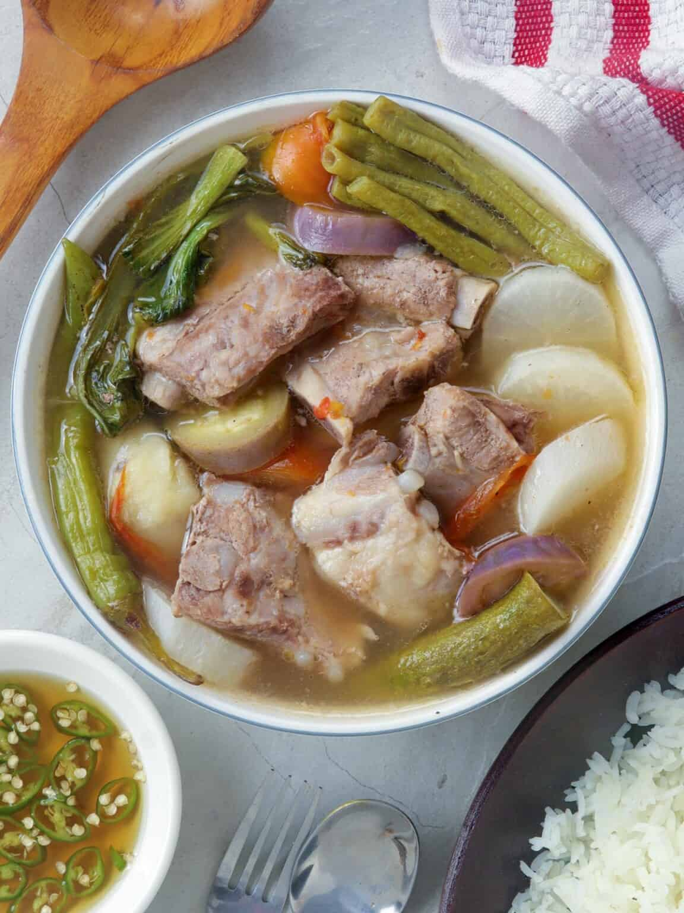

Sinigang na Baboy

Ingredients
-
Pork-while you can use meatier and leaner parts such as pork shoulder (kasim), I recommend bony cuts such as spare ribs, pork belly with ribs, hocks, knuckles, and tailbone or neck bones for better flavor.
-
Tomatoes- use ripe, juicy tomatoes
-
Onion-peeled and quartered
-
Fish sauce- brings umami flavor; you can swap it with salt if you prefer
-
Gabi- adds a starchy component to the dish and thickens the broth
-
Radish (labanos)
-
Vegetables- the recipe uses sitaw (long beans), eggplant, okra, and bok choy, but feel free to include other local produce available such as kangkong (water spinach) and pechay
-
Tamarind- can be fresh pods, paste, or powder mixes
-
Banana or finger chili peppers (siling haba)-adds a mild heat; optional and can be omitted
How to make from scratch
-
Wash tamarind pods under cold, running water to remove any grit or dirt from the skins.
-
Place in a saucepan with about 1 cup water and bring to a boil. Cook for about 4 to 5 minutes until soft, and the outer skins begin to burst.
-
Using a fork, mash the tamarinds to release the pulp.
-
Place the tamarind and liquid in a fine-mesh strainer set over a bowl. Continue to mash with a fork, returning some of the liquid into the strainer once or twice to fully extract the juice.
-
Discard seeds and skins. Pour tamarind juice into the pot.